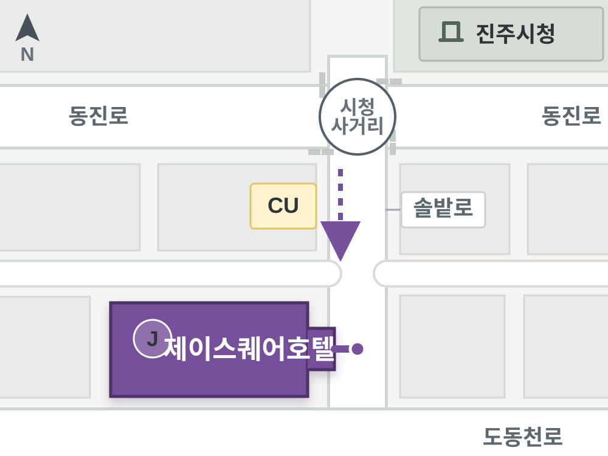

Location 제이스퀘어호텔 약도 경상남도 진주시 솔밭로 107 진주시청 맞은편에 위치한 호텔입니다. 저층은 웨딩홀과 연회장, 상층은 객실로 구성되어 예식·연회·숙박 동선이 같은 건물 안에서 이어집니다.
 시청사거리에서 솔밭로를 따라 남쪽 방향으로 이동 도동천로에 닿기 전, 솔밭로 서측의 제이스퀘어호텔 건물 내비게이션 검색: 제이스퀘어호텔 또는 경남 진주시 솔밭로 107